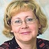
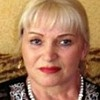

Дошкольное отделение школы № 1366
В 2015 году 19% первоклассников Школы № 1366 пришли из дошкольного отделения.
- 1-я Вольская улица, 20к2
Воспитатели
Воспитатели, которых чаще всего благодарят родители (отзывы и профили сотрудников взяты с официального сайта школы):|

Воспитатель
Лобанова Антонина Григорьевна
2 благодарности |
Старший воспитатель
Сударенкова Ольга Михайловна
2 благодарности |
Муз. рук.
Шпак Екатерина Евгеньевна
2 благодарности |

Воспитатель
Малетина Тамара Федоровна
2 благодарности |
 Воспитатель
Карпухина Лариса Михайловна
Воспитатель
Карпухина Лариса Михайловна
2 благодарности |
Воспитатель
Демидова Татьяна Григорьевна
1 благодарность |
Воспитатель
Ледяева Юлия Владимировна
1 благодарность |
Воспитатель
Ленковская Виктория Александровна
1 благодарность |
|
Воспитатель
Чибисова Марина Михайловна
1 благодарность |
Буйлова Александра Евгеньевна
1 благодарность |
Воспитатель
Калачева Любовь Владимировна
1 благодарность |
Отзывы
Данные собраны c официального сайта школы и через форму для отзывов.
Мы, родители и воспитанники группы №11, хотим выразить огромную благодарность нашим уважаемым воспитателям: Тамаре Федоровне, Наталье Викторовне и Ирине Васильевне.
Это профессионалы высокого качества, добрые и отзывчивые люди. За годы, проведенные вместе, мы стали почти как одна семья. Подходит время расставания, но в наших сердцах Вы - навсегда.
Спасибо за ваше терпение, мудрость и любовь к детям.
Родители и воспитанники группы №11.
Это профессионалы высокого качества, добрые и отзывчивые люди. За годы, проведенные вместе, мы стали почти как одна семья. Подходит время расставания, но в наших сердцах Вы - навсегда.
Спасибо за ваше терпение, мудрость и любовь к детям.
Родители и воспитанники группы №11.
Добрый день!
Коллектив родителей будущих воспитанников выражает благодарность администрации школы за организацию Дня открытых дверей в дошкольном отделении.
Большое спасибо Ольге Михайловне за теплоту и гостеприимство.
Также, спасибо педагогу по физической культуре, Голубевой Ольге Александровне, за педагогическое мастерство, обаяние и доброту.
Коллектив родителей будущих воспитанников выражает благодарность администрации школы за организацию Дня открытых дверей в дошкольном отделении.
Большое спасибо Ольге Михайловне за теплоту и гостеприимство.
Также, спасибо педагогу по физической культуре, Голубевой Ольге Александровне, за педагогическое мастерство, обаяние и доброту.
От лица нашей семьи выражаю огромную благодарность коллективу д/с 1366 за добросовестный труд и любовь к детям. В этом д/с воспитывался мой сын, теперь дочь в подготовительной группе, скоро и третий ребёнок будет посещать садик. За все эти годы дет.сад стал родным. Воспитателям я могу доверить самое ценное, а это самое главное для меня. Отдельное спасибо Ольге Михайловне, Ларисе Михайловне, Антонине Григорьевне, Любови Владимировне и Татьяне Григорьевне! Низкий Вам поклон за Ваш труд!!!
Наши дети ходят в садик более трех лет. С первых дней с нами наши замечательные воспитатели Марина Михайловна и Юлия Владимировна, которые проявляют трогательную заботу и внимание к нашим деткам, занимаются с ними и не перестают удивлять нас волшебными и необычными праздниками и прочими мероприятиями. Особое внимание наши воспитатели уделяют развитию и обучению детей. Дети с огромным интересом постигают азы математики, изучают окружающий мир, делают замечательные поделки и рисуют, в общем, все, что нужно для полноценного развития ребенка. Наши дети с огромным желанием каждое утро бегут в детский сад и порой не всегда хотят возвращаться домой вечером :).
Особо хотим отметить появление в коллективе детского сада музыкального руководителя Екатерины Евгеньевны, с появлением которого праздники приобрели необычно живой оттенок. Музыкальные номера стали живыми, красочными, современными, с элементами хорошего шоу, участвуя в котором дети раскрывают свои таланты, преображаются на сцене, чем безумно радуют родителей.
Семья Акимовых.
Особо хотим отметить появление в коллективе детского сада музыкального руководителя Екатерины Евгеньевны, с появлением которого праздники приобрели необычно живой оттенок. Музыкальные номера стали живыми, красочными, современными, с элементами хорошего шоу, участвуя в котором дети раскрывают свои таланты, преображаются на сцене, чем безумно радуют родителей.
Семья Акимовых.
Дорогие Тамара Федоровна, Наталья Викторовна, Ирина Васильевна! От всей души поздравляю Вас и ваших коллег с наступающим 8 марта! Спасибо Вам за прекрасный утренник, который оставил в моей душе самые теплые и приятные моменты! Огромное спасибо нашим музыкальным руководителям - Екатерине Евгеньевне и Александре Евгеньевне! Чудесные песни, танцы, оркестр тронули меня до глубины души! Дети очень организованы, хорошо читают стихи, прекрасно поют песни, здорово танцуют, потрясающе играют роли! Все это результат кропотливой, требующей многогранного терпения, творческого потенциала работы педагогического коллектива. Желаю Вам крепкого здоровья, творческих успехов и креатива в работе, а также финансового благополучия!
Присутствовала на празднике в дет.саду 27.10.2015 г., посвященный ОСЕНИ (группа №10). После праздника прибывала в ВОСТОРГЕ!!! Хочу сказать большое спасибо музыкальному руководителю, хореографу и конечно нашим педагогам Виктории Александровне и Светлане Геннадьевне.
Если вы нашли ошибку или неточность, пожалуйста, сообщите нам об этом.
Ученик, выпускник или родитель? Оставьте отзыв о детском саде.